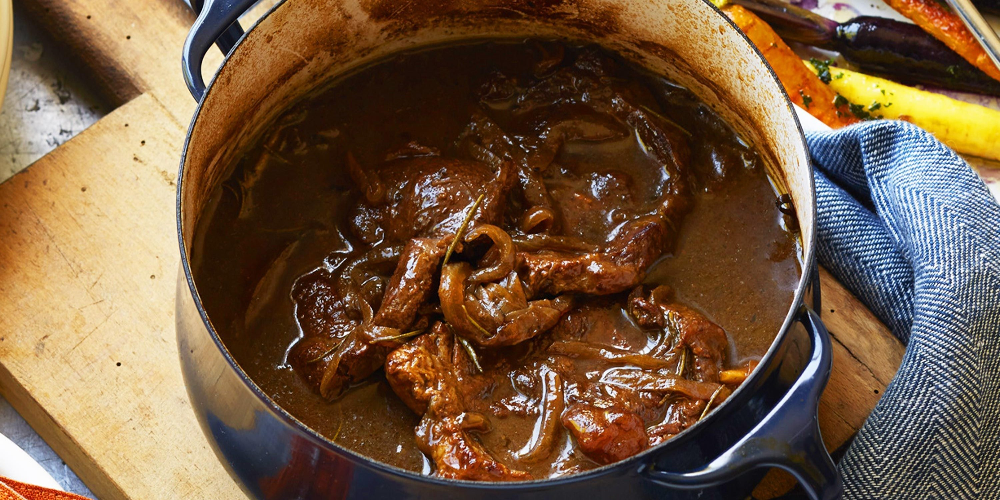

Curtis Stone's recipe for braised beef with carrots and onions makes a
great hearty meal that the whole family will enjoy.
(Taste.com.au)
- 400g Coles beef oyster blade steak, cut into 4 large pieces
- 3 tablespoons of olive oil
- 1 small-medium brown onion (125g), thinly sliced
- 1 sprig fresh rosemary
- 2 cloves garlic, smashed, peeled
- 1 tablespoon Coles Brand Balsamic Vinegar
- 1 cup Campbell's Beef Stock, from 500ml tetra pack
- 2 cups water
- 1 bunch Hatters Coloured Carrots, scrubbed, halved lengthwise
- 1 tablespoon of fresh flat-leaf parsley, finely chopped
- To prepare the braised beef: Position the rack in the centre of the oven
and preheat the oven to 150C (130C fan). Season the beef with salt and
pepper. Heat a heavy medium casserole pot or Dutch oven over
medium-high heat. Add 2 tablespoons of the oil, then add the beef and
cook, turning as needed, for about 10 minutes, or until the beef is brown
on all sides. Remove the beef from the pot and pour off all but 1 tablespoon
of the oil.
- Add the onion, rosemary, and garlic to the pot and cook, stirring to scrape up
the brown bits on the bottom of the pot, for about 8 minutes, or until the onion
is golden. Reduce the heat to medium, add the vinegar and then the stock,
stirring to scrape up any remaining brown bits. Return the beef to the pot and
the water to just cover the meat. Cover the pot and transfer it to the oven.
Braise for about 2 hours, or until the meat is almost tender. Transfer the pot
the stove top, carefully remove the lid. Increase the oven temperature to
260C (240C fan).
- Simmer the beef mixture, uncovered, over medium heat for about 30 minutes,
or until the beef is tender and the sauce has reduced to about one quarter of its
original volume. Remove the rosemary stems. Season well with salt and pepper.
- Meanwhile, to roast the vegetables: On a heavy large baking tray, toss the carrots
with the remaining 1 tablespoon oil and season with salt and pepper. Arrange in an
even layer over the baking tray and roast for about 10-12 minutes, or until
crisp-tender. Toss the carrots with the parsley. Serve the carrots alongside the
braised beef and braising liquid.